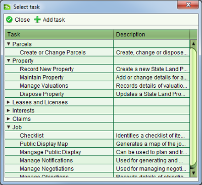

Lodge a New Job
To create a new job, access the Job Details screen from the Jobs > New Job menu or by
selecting New Job.
New Job.
Every job must have at least one task added to it before it can be lodged. You should also
enter a brief description and link in any documentation relevant to the job. Once you have
completed entering the job details, lodge the job by clicking  Save on the Job Details screen. This will save the
details you have entered, issue a job number and assign the job to you so that you can start
work on the tasks.
Save on the Job Details screen. This will save the
details you have entered, issue a job number and assign the job to you so that you can start
work on the tasks.
Steps
-
-
From the Dashboard select the New job to open the Job Details screen.
-
On the General tab, enter a description for the job.
-
On the Tasks tab, click
 Add to open the
Select Task dialog and select the tasks relevant to the job.
Add to open the
Select Task dialog and select the tasks relevant to the job.
-
This may require you to expand the task groups to find the task(s) you need.
-
You can add each task one at a time by double clicking them or clicking Add task.
-
When you have added all of the relevant tasks to the job
 Close the Select Task dialog
Close the Select Task dialog

Select Task dialog
-
-
On the Documents tab, record each of the physical documents provided for the job.
-
Ensure you select the appropriate document type and record the document date (i.e.
the date recorded on the face of the physical document) or today’ s date if the
physical document is not dated.
-
Enter a reference number for the document and a description. The reference number
should be taken from the physical document. . If the physical document does not
have any reference number, then enter the job number, period and document sequence
number (e.g. 120001.03).
-
The Source Agency is the name of the organization that created the physical
document. E.g. For a plan, the name of the surveyors firm or the surveyors name can
be entered here. This field is optional and can be left blank.
-
If you have scanned the document, use the Attachment field to link in the scanned
image. If you have not yet scanned the document, you will need to do this at a
later stage and link it into the document using the Edit Document functionality
available from Document Search.
-
On the Map points tab, navigate the map to the location of the plan and add one or more
job points using the Add Job Point tool

-
Click the Save button on Job Details to
lodge the job. The Job will be automatically assigned to you and will be available for
you to continue working on immediately.
Also See
-
-
SOLA State Land
-
State Land Desktop Screens
-
General How To
-
Documents How To